The following screen that allows the operator to handle the tools of the machine.
Selection tool type
Each tool type has a tool selected, as visible in the following example image:

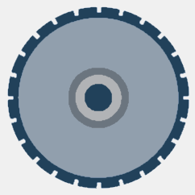 | Disk |
 | Tools |
The background of the 'Disk' type appears light blue because it is the currently selected tool category.
It is sufficient to click the rectangle of the tool type desired, to update the underlying list of tools with those available for that type.
As consequence of the tool type change, it will be automatically selected as shown in the previous example image.
List of tools present for selected tool type
The tool list shown as an example in the next image has four disks: 'Disk 400', 'Disk 625', 'Disk 2755' and 'Disk 325'.
The first disk of the list is the one currently mounted on the machine, this is highlighted by the light green background and the green checkmark.
In the right section, are shown the parameters relative to the selected tool.

List items
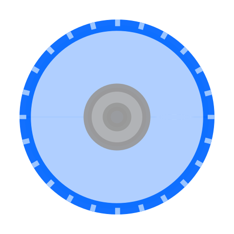 | Tool type |
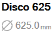 | Main tool information |
 | Force tool |
Search Filters
In the bottom part of the tools list is present a search bar composed from the following elements:

The elements that compose the research filter are illustrated below:
Button search by tool name | |
Button search for tool diameter | |
 | Button to cancel the applied filter |
Lower bar
The bottom bar of the tool list offers functionalities to add and remove tools from the list.

 | Add tool |
Delete tool | |
Duplicate tool |
Add tool
Through this window the procedure of creation of a new tool is carried out. The required parameters change based on the type of the tool that you want to create.
The following image shows the window of creation of a new tool for available type:
Disco | Fresa | Foretto |
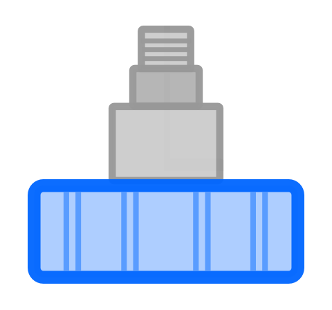 |  | |
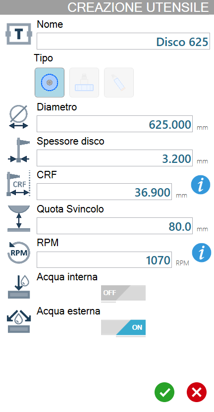 |  | 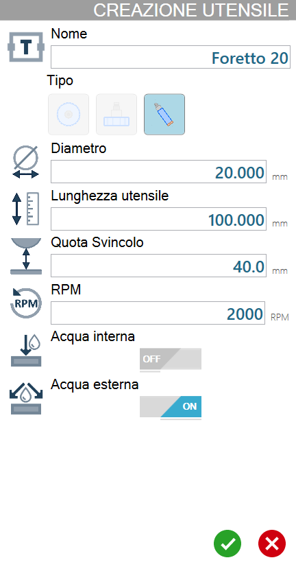 |
List of parameters for selected tool
In this list are reported all parameters relative to the tool currently selected.
Each variation of the selection of the currently selected tool will allow the operator to view the updated values for the desired tool and to make changes to each value.
The list of parameters and their values will also be updated when a different type of tool (Disk / Tools) is selected, showing the values of the selected tool for each category.
Disk parameters
Below are shown the parameters associated to a disk.

Name | |
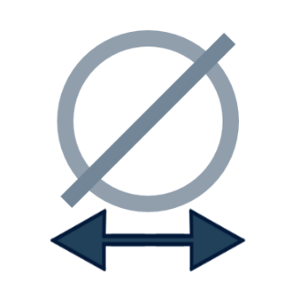 | Diameter |
 | Disk thickness |
 | CRF - Flange Rotation Center |
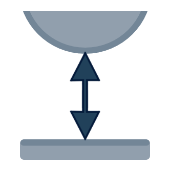 | Junction Quote |
 | RPM |
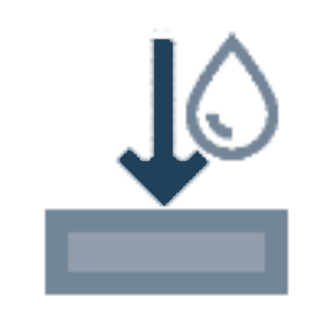 | Internal water |
External water |
Disk rotation speed
To the right of the RPM parameter is located the following button:
 | RPM Information |
In this window is shown a table containing the conversions from rotation speed to RPM based on the disk diameter selected.
The recommended values for the selected disk are highlighted in green.

Parameters milling cutter and hole
Below are shown parameters related to tools such as milling cutters and drill bits.
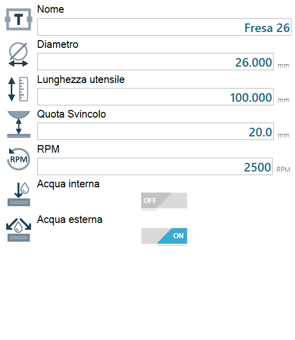
 | Tool length |
Tool probing
If the machine has the optional tool keyboard tool, it is possible activate the procedure from this panel.
Allow to start a cycle through which it is possible to calculate the diameter, in the case of disk, or the length, for milling and drills.
Buttons
On the right side of the panel is present one of the following buttons.
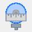 | Start disk keyboard |
 | Start secondary tool probing |
NOTEThe button for the disk's keyboard is available only inside the 'Disk' section of the panel.The button for the check of the secondary tool is available only inside the 'Tools' section of the panel.
Procedure
To measure the diameter of the disk, or the length of the drill/milling cutter currently mounted on the machine, press the corresponding button in the right section of the panel.
At the end of the cycle, the program automatically updates the data corresponding to the probed tool measurement.
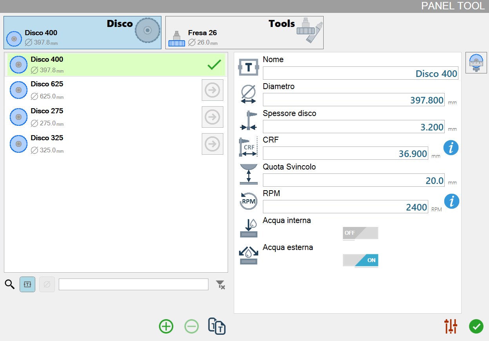
Other Buttons
In the bottom left of the screen there is the following button:
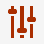 | Go to the 'Slab processing parameters' panel |